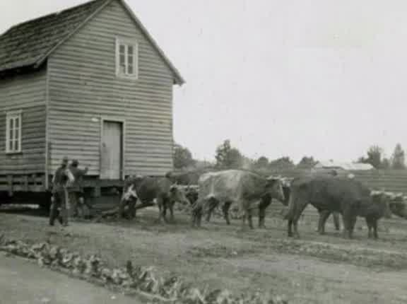

Recuperar
Reunir imágenes, identificar sus lugares y reconocer a sus autores y archivos de origen.
Recuperar la mirada del pasado. Volver a sus paisajes. Descubrir lo que cambia y lo que permanece en Chiloé.
Explorar el paso del tiempo ↓Aquí volveremos
a mirar.

ANTES / ARCHIVOAHORA / PENDIENTEChiloé · Lugar y fecha por identificar
Vista preliminar: el recorte proviene del video de @chiloeonl. El panel derecho es un espacio reservado, no una fotografía actual. Faltan los archivos originales, el par contemporáneo y sus créditos.
Chiloé Old New Landscapes nace de una pregunta: ¿qué queda de los lugares que guardamos en fotografías?
El proyecto busca recuperar y mejorar digitalmente fotografías antiguas de Chiloé, conservando su valor documental, y ponerlas en diálogo con registros actuales de los mismos lugares. Una invitación a reconocer el patrimonio, las transformaciones y la vida cotidiana del archipiélago.
Reunir imágenes, identificar sus lugares y reconocer a sus autores y archivos de origen.
Mejorar la legibilidad sin inventar el pasado. Conservar el original y documentar cada intervención; identificar cualquier reconstrucción o uso de IA.
Regresar al mismo lugar y buscar el mismo encuadre. Comparar épocas sin confundir una restauración con una fotografía del presente.